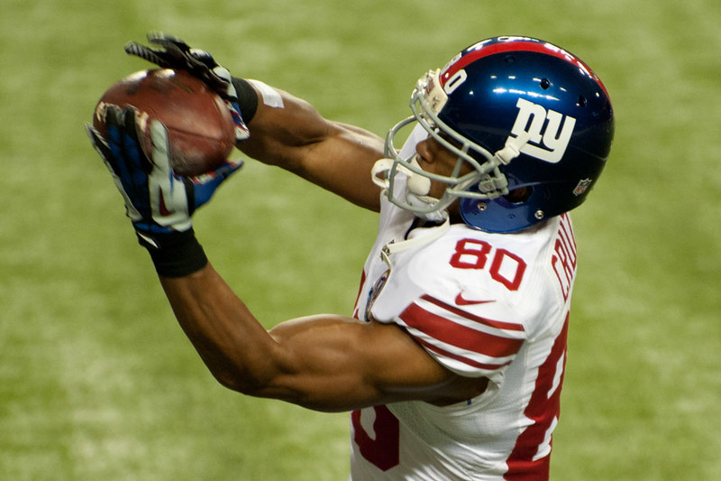

Game one was vs. the Dallas Cowboys. The game's final result was 40-0 in the favorite of the Dallas Cowboys. The game was prime time at 8 p.m. with heavy rain at MetLife stadium. The Giants got the ball first and drove down the field. They failed to convert a 3rd down in the red zone and attempted a field goal by Gram Geno. The kick was black, and the Cowboy returned the blocked kick to the end zone. At this moment in the game, the momentum completely switches. From that moment on, it was all Cowboys. The Giant's defense could not get off the field and was letting the Cowboys run all over them. Whenever the Giants were on the Field, they did not flow on offense and never created a good-looking offensive drive. The Giants only had 171 total yards, and 108 were rushing yards. The Giants also had three turnovers. The Giants came into this game with a lot of hype going into the season and disappointed all fans. This was a rough first game for New York. The Giants came out of this game with one injury, but it was to star offense line man Andrew Thomas. He had a hamstring injury is and likely to miss game 2 vs. the Cardinals.
Game two was vs. the Arizona Cardinals and was supposed to be a bounce-back game for the Giants. It was, but it took work. The result of the Game was 31-28 in favor of the New York Giants. The first half of this game started like their first game vs. the Cowboys. The Cardinals dominated the Giants in all aspects of the football game. The Giants could not get anything going and allowed the Cardinals to score 20 points in the first half. At half, the Giants were losing 20-0 in favor of the Cardinals. The Giants were outscored 60-0 in their first six quarters of the 2023 NFL season, but something was said at halftime. The Giants came out firing on all cylinders and started to mount a comeback. The Giants came out of the half with Danial Jones throwing a major deep ball to the rookie wide receiver Jalin Hyatt. This changed the game completely. The Giants started scoring on every drive of the second half and started to stop the Cardinal's offense. The Giants returned from down 20 to win the game by 3 points. This was one of the most significant comebacks in the Giants franchise history. The comeback was led by Daniel Jones, who threw for 321 years, threw two touchdowns, and rushed for one in the second half. The Giants winning this game was significant for them to show they can be competitive. The Giants did, though, suffer some injuries during this game. Star Running back Saquon Barkley went down with a High Ankle Sprain, and offense lineman Ben Bredeson also sustained a concussion.
Game three was vs. the San Francisco 49ers. The final result of this game was 30-12 in favor of the 49ers. The score of this game did not represent the quality of the game. It was a very close game until it got out of hand. The Giants came into this game short-handed without the presence of star running back Saquon Barkley and started offense lineman Andrew Thomas. The game was very close for the first three quarters. The Giants looked good at the start, holding the 49ers to a field goal and then coming back down the field and scoring one of their own. The Giants started to fall apart, with the game going into half 17-6 49ers leading. The Giants jumped to mount a comeback again, with the game being 20-12, still the 49ers leading. The Giants had the ball in a one-possession match but failed to make a good drive. They ended up giving the ball back to the 49ers, where they scored another touchdown, and that was when the game fell apart. The Giants proved that they can compete with top teams like the 49ers. They need to be a little more healthy. Daniel Jones only threw for 137 yards with one interception. He was pressured the whole game because the offense line was very beat up. Daniel Jones is now 1-11 in prime times games, which is becoming a significant issue for him. The Giants did have some injuries during this game, with rookie cornerback Deonte Banks hurting his arms, and D.J Davidson also went out with an elbow injury. The Giants now have a lot of breaks between this Thursday night game and their next game, which is on Monday, October 2. Hopefully, the Giants can heal up and win this game because it is almost a must-win game.
On October 2, 2023, the Seattle Seahawks dominated the New York Giants with a 24-3 victory. The Seahawks' defense played amazing recording 11 sacks and a 97-yard interception return for a touchdown by rookie cornerback Devon Witherspoon. Offensively, Seattle's Kenneth Walker III contributed with 79 rushing yards and a touchdown. The Giants stuggled with the absence of star player Saquon Barkley and were limited to 248 yards of total offense. Same story every year for the Giants. INJURY BUG!
On October 8, 2023, the Miami Dolphins easily won 31-16 over the New York Giants. Tua Tagovailoa the Dolphins' quarterback played an amazing game throwing 308 passing yards and 2 touchdowns. De'Von Achane also made a significant contribution with 151 rushing yards and a touchdown. The Giants, on the other hand, struggled offensively, with Daniel Jones throwing for 119 yards and no touchdowns, and Darren Waller leading their receiving efforts with 86 yards. This game truly showed that these two teams are going to totally different directions. Dophins on the rise and Giants on the decline.
In the game on October 15, 2023, between the New York Giants and the Buffalo Bills, the Bills narrowly come out on top with a final score of 14-9. The Giants led for most of the game with field goals, but the Bills' offense came alive in the fourth quarter to secure the win. Key performances included Josh Allen of the Bills, who completed 19 of 30 passes for 169 yards and two touchdowns, and Tyrod Taylor of the Giants, who threw for 200 yards. The Giants' defense made significant plays, including an interception and a fumble recovery by Micah McFadden. Despite a strong defensive effort, the Giants' offense struggled to capitalize on opportunities, resulting in a close defeat.
On October 22, 2023, the New York Giants defeated the Washington Commanders with a final score of 14-7. Key contributions for the Giants came from back up quarter back Tyrod Taylor, who threw for 279 yards and 2 touchdowns, and Darren Waller, who caught 7 passes for 98 yards and a touchdown. The Commanders' were led by Sam Howell who passed for 249 yards, and Terry McLaurin, who had 90 receiving yards. This was a very close game that came down to the wire. Both teams struggling on the season this was a good win for the Giants.
In the game between the New York Giants and the New York Jets on October 29, 2023, the Jets emerged victorious with a final score of 13-10. For the Giants Saquon Barkley made a significant impact with 128 rushing yards, while Kayvon Thibodeaux had an impressive performance on defense with 3 sacks and 9 tackles. The Jets' offense saw key plays from Zach Wilson, who passed for 240 yards and a touchdown. This game overall was a struggle for both teams and showed why they both are at the bottom of their own divisions
In the game on November 5, 2023, between the New York Giants and the Las Vegas Raiders, the Raiders killed the giants with a final score of 30-6. Key contributions for the Raiders came from Josh Jacobs, who had 98 rushing yards and scored two touchdowns. The Giants' performance was highlighted by Saquon Barkley with 90 rushing yards and Wan'Dale Robinson, who had 35 receiving yards and scored a touchdown. The game showed the Raiders' offensive strength and the Giants' struggles on both sides of the ball.
In the game on November 12, 2023, between the New York Giants and the Dallas Cowboys, the Cowboys dominated with a 49-17 victory. Key performances included Dak Prescott of the Cowboys, who threw for 404 yards and accounted for 5 total touchdowns, and CeeDee Lamb, who had 151 receiving yards and 2 touchdowns. The Giants struggled to keep up with rookie quarter back Tommy DeVito. The game displayed the Cowboys' offensive strength and defensive strength.
On November 19, 2023, the New York Giants ran over the Washington Commanders with a score of 31-19. Saquon Barkley was a standout player, with 140 yards and scoring two touchdowns. Giants' quarterback Tommy DeVito had an impressive game, completing 18 of 26 passes for 246 yards and three touchdowns. For the Commanders, Sam Howell threw for 255 yards and two total touchdowns. The game was marked by several key plays and turnovers that influenced the outcome of the game.
In the game between the New York Giants and the New England Patriots on November 26, 2023, the Giants figured a way to come out with a victory with a final score of 10-7. Tommy DeVito, stepping in for injured quarterbacks Daniel Jones and Tyrod Taylor, led the Giants by throwing for 191 yards and a touchdown. Despite a fumble and being sacked six times, DeVitos efforts, along with a strong defensive performance, were crucial in securing the win for the Giants. The Patriots struggled with quarterback issues, with Mac Jones being replaced by Bailey Zappe after throwing two interceptions in the first half. A missed field goal by the Patriots in the final seconds sealed the victory for the Giants.
In their recent game against the Green Bay Packers, the New York Giants clinched a dramatic victory with a score of 24-22. The game was showcased on "Monday Night Football," was a great game. With the Giants' performance breathing new life into their playoff hopes. Key moments included Randy Bullock's successful 37-yard field goal as time expired, marking a significant win for the Giants and improving their season record. This game was a pivotal moment for the team, indicating their resilience and ability to secure wins in high-pressure situations.
